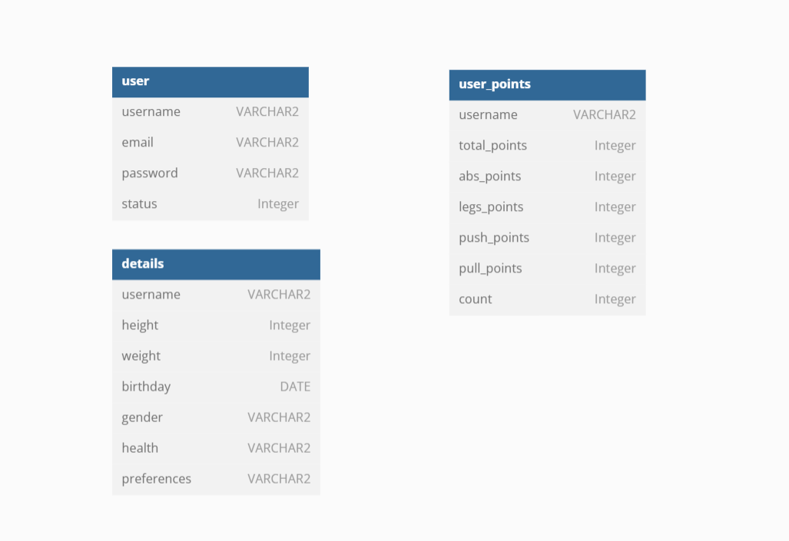
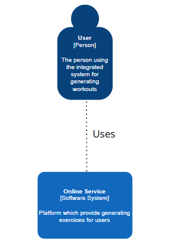
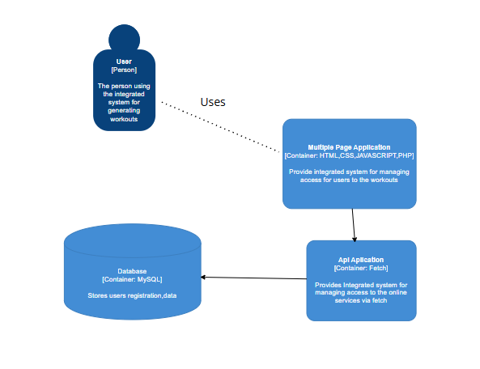

Stoleriu Denis-Matei (2B3) & Cioborariu Dumitru (2B3)
* Database Diagram
* C4 Diagrams
 This application generates a workout based on certain user data. The user can choose their location, but also which muscle groups to work.
The application also allows a ranking
of the most active users, but also a data flow for each user.
The audience of this application are people of all ages, offering them support to have a healthier and longer life.
Workout Web Generator is a web application, designed to easily generate an workout depending on your preferences.
The application is structured on four main components:
- Web interface (frontend) - built with fundamental technologies (HTML, CSS AND Javascript)
- Backend - PHP for application logic and code organised in MVC (Model - View - Controller)
- Relational database - MySQL for users data
- Local Server - XAMMP
- customized location (home, gym, calisthenics)
- generates workout for a specific muscle group
- detailed clasaments available for users
- RSS news fluxe available for individual stats for users
- workout depending on your health condition
Home page
* The home page welcome users with a clear section and quick links to key functions
Exercices page
* Here are the exercises generated depending on your preferences
Account page
* Profile info shows user details
- The application will encrypt the user's password before storing it in the database
- Passwords are hashed with Bcrypt
- The application is using prepared statements to prevent SQL injection
https://www.geeksforgeeks.org/php/how-to-get-the-base-url-with-php/
https://www.w3schools.com/php/php_cookies.asp
https://www.w3schools.com/jsref/api_fetch.asp
https://www.w3schools.com/js/
https://www.w3schools.com/php/
https://www.geeksforgeeks.org/php/how-to-generate-pdf-file-using-php/